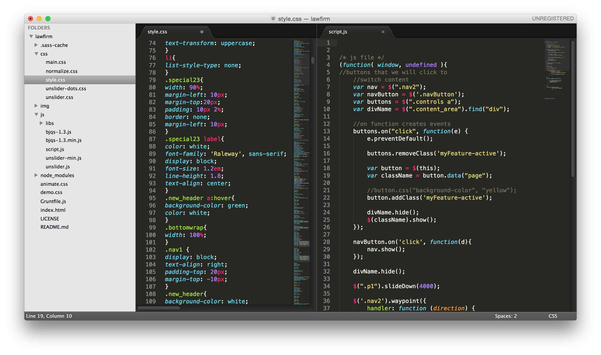
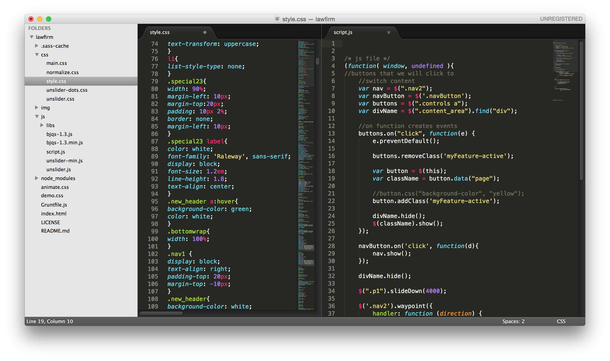

Project Scope
USER EXPERIENCE
Site architecture redesign and mapping. Thumbnails Wireframes
USER INTERFACE
Redesign of the existing website and its components: Homepage register page
Development
HTML5 CSS3 JS / jQuery 3

Discovery
GROK is an event unlike any other. It’s a gathering of creative people who want to connect with their peers and discuss the most pressing issues of our day. The term GROK was originally coined by Robert A. Heinlein in his book, Stranger in a Strange Land. Stranger in a Strange Land tells the story of a boy raised by Martians who must then learn how to be a human again. In the story, ‘Grok’ is a Martian word that means to understand something or someone utter completeness and empathy. In the spirit of Heinlein’s idea, GROK is designed to promote and encourage interaction and engagement between participants, so don’t expect to sit passively and listen to a speaker.
Instead of listening to speakers, GROK is built around group discussions called 10/20s. 10/20s are mediated discussions between about a dozen participants. Any participant in a 10/20 can propose a topic for discussion. You can talk about software, your work environment, your personal challenges–anything that’s on your mind. After 10 minutes of conversation, the session leader can choose to close the topic and ask for another. If the conversation is particularly interesting, the session leader can extend the clock for another 10 minutes, hence the name, “10/20s.”
Mockups


Integrations
Google Fonts
Headlines: Raleway Body: Roboto The above fonts are used from Google's free collection, all accessible within their site. Because these fonts are stored on Google's servers, Conquest Brewery will always be fast and reliable.
Responsive
This site was optimized for a Responsive viewing experience. Responsive Web Design (RWD) is a web design approach aimed at crafting sites to provide an optimal experience with a minimum of resizing and scrolling, across a wide range of devices.
 
